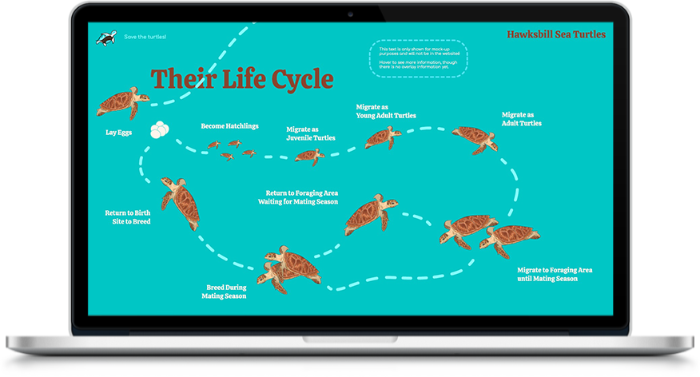
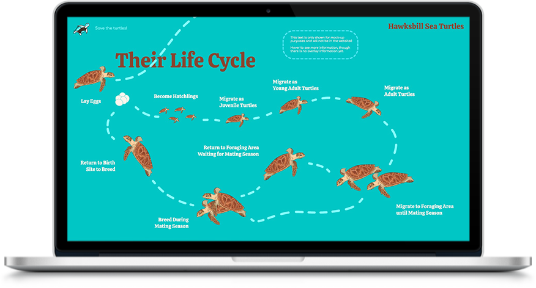

The website displayed on the desktop screen will take up the whole screen. The user will first arrive on the landing page with 4 suggested directions to discover more
about the
endangered turtles (see image 1 on the top left corner). Then once the user have chosen their destination and clicked on the right arrow, the user will navigate to a page where they can scroll horizontally to learn more about a specific
endangered sea turtle (see image 2 on the right of image 1). As the user scrolls, more information will appear and the mini turtle will follow the dashed lines, which will be invisible in the actual website (see image 3 and 4).
When the
user lands on a section of the page discussing the turtle's life cycle, the mini turtle will disappear from the section to prevent a confusion and will re-appear in the next section (see image 5 and 6 at the bottom left corner). Finally,
the user will be led to the end of the webpage and will be able to return to the main menu by clicking on the arrow at the bottom (see image 8 at the bottom right corner). On the main menu, if the user is to click on the top arrow, they
will be scrolling up. It is the same the other pages: clicking the left arrow is to choose the left webpage and so scroll to the left, and clicking the bottom arrow to scroll down like a normal webpage. It will have an interactive touch as
if the user was swiping right, left, top and bottom.

 
